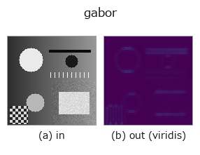

texture op• データ種: image → image
• 呼び出し: fullseye.apply(img, "gabor", a=0.5, b=0.5) (2-D は 1 画像 + 2 スカラつまみ a,b∈[0,1] のモデル)
• HALCON 相当: gen_gabor(意味・パラメータは HALCON リファレンスが参考になる)

*図は合成の入力 128×128 で実際に走らせた出力。左が入力、右が出力。点群は上から見た散布(明るさ = z)、1-D 列は折れ線、体積は z 方向の最大値投影、動画は中央フレーム、複素画像は振幅、絵にならない返り値は値そのもの。*
*出力は viridis 風の疑似カラー(暗い紫 = 小、黄 = 大)。距離・位相・向き・深度のような「量の場」を読むため。*
つまみ a を振る(0.1 / 0.5 / 0.9、もう一方は既定):
▸ gabor: knob a sweep (docs site)
つまみ b を振る(0.1 / 0.5 / 0.9、もう一方は既定):
▸ gabor: knob b sweep (docs site)
別の画像でも(合成シーン / 写真 / 硬貨。上段が入力、下段がその出力。つまみは既定):
▸ gabor: other inputs (docs site)
*4 列目はカラー (H,W,3) の入力。この op は色を跨がずに扱える(色チャネルを 3 本目の空間軸として畳み込まない)。*
Gabor energy |v * g| — an oriented band-pass texture response.
• `a — **向き** θ = π·a` [rad]。カーネルの余弦は回転後の x 方向に走るので、
`a=0` (θ=0) は 縦縞(列方向に明暗が変わる模様)に最も強く応答し、
`a=0.5 (θ=90°) は **横縞**に応答する。a=1` は θ=180° で a=0 と同じ向き。
• `b — 空間周波数 0.1 + 0.3·b` [cycles/px]。
★正規化(2026-09-02 の修正): カーネルの L1 ノルムで割る固定スケール。
以前は `_norm` = その画像での最大絶対値で割っていたため、**応答の大小そのもの
が消えていた**。実測(96×96 の横縞、周波数 0.25): 生の畳み込みの平均振幅は
θ=0° が 0.0165、θ=90° が 0.9077 で 54.9 倍の差があるのに、`_norm` を通すと
平均は 0.3554 対 0.4790 = 1.35 倍まで潰れていた —— 向きを見分けるための
特徴量なのに識別力が消えていた(向きごとに別の除数で割っていたのだから当然)。
`|v| <= 1 なら |v * g| <= sum|g|` なので L1 で割れば値域 [0,1] を保ったまま
op を跨いで比較できる絶対スケールになる。
• gallery2d_texture_freq ファミリ ガイド
• サンプルデータ カタログ(DL URL / ライセンス) — 2-D は skimage.data(BSD/public)+ 合成、3-D は実データ源(Stanford/PDS 等)の DL URL。
• 演算子の来歴・参考文献 — この op 族の元になった研究/手法の出典。
• アルゴリズムの正典(著者・年)と用途は上記ファミリ使い方ガイドに記載。
下のプログラムは実際に走ることを確かめてある(図と同じ入力)。Studio のヘルプではこのブロックがボタンになり、その場で読み込んで実行できる。
gabor 0.50 0.50
▸ Load this pipeline · Load & run
• gallery2d_texture_freq — py -3.11 examples/gallery2d_texture_freq.py
image を入力に取れる)identity · gaussian · mean_box · bilateral · unsharp · median · min_filter · max_filter
texture)std_filter · sk_frangi · sk_meijering · sk_hessian · sk_gabor · sk_lbp · sk_entropy · sk_shape_index
*Provenance: ops.py — 2D operator registry. この per-op ノートは tools/opdocs.py md が自動生成(手編集しない)。*
© 2026 Kazufumi Furuse — Fullseye operator documentation. Licensed under Apache-2.0.
{kind=link}
{kind=link}
{kind=link}